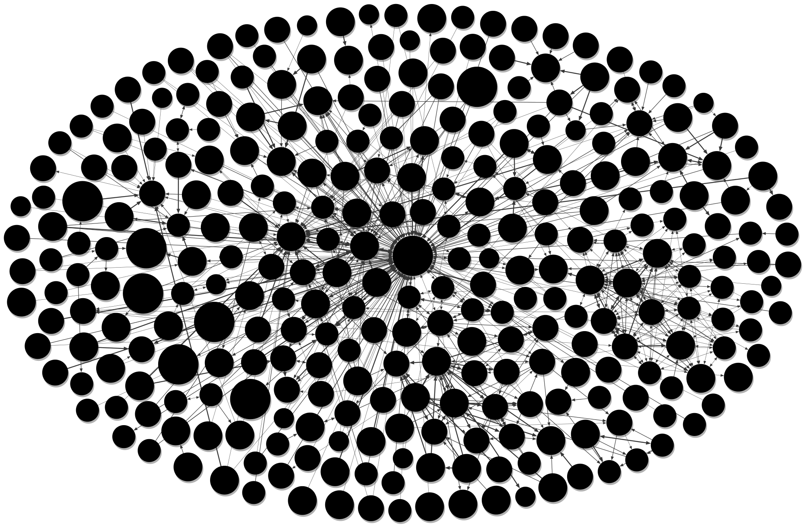

    

    <div class="jumbotron">
      <h3>{{titulo}}</h3>

      <p>

        POP Framework is a set of techniques, methods and tools that, combined all of them, 
        allow you to choose which topic is most appropriate when publishing in open data portals 
        according to the profitability criterion you want to obtain. For this purpose, a search and 
        cataloging of data sets is carried out in open data portals in SmartCities and, according to the 
        criterion to be maximized, calculations are carried out to offer, based on the catalog data 
        obtained from the previous SmartCities, at the time of making the final decision. 
        If you want to know more, click here to learn more about what POP Framework is or access 
        the information section.

    </div>


